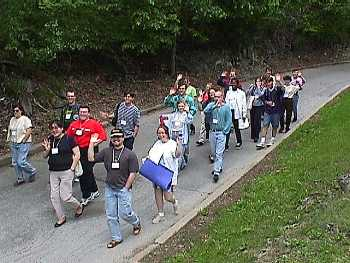

|
|
Youth members at General Synod
More than the future of the church... part of today's church too
|
Youth coordinator Linda Borden Taylor and youth member
Adrienne Charlton (Athabasca) at the youth orientation session. |
Twenty-nine
members of General Synod have an added responsibility in Montreal. Besides being
full members of their diocesan delegation, they are also charged with representing the
young people of their diocese.
And contrary to what many people believe, not many youth members
are students. In fact, a quick poll reveals a considerable number of different walks
of life:
A fulltime travel
agent
An environmental
risk analyst
Director of
Anglican summer canoe trips
A receptionist with
a BA of Sociology and a minor in dance
An accomplished
concert pianist
A mechanical
engineer with Chevron Canada (who just graduated and is missing her convocation to attend
General Synod)
A massage therapist
A resident of a
small town in south-east Saskatchewan who lives on a beef cattle farm
A full-time daycare
worker, having graduated from an Early Childhood Education Program
And many, many more
young Anglicans active in their faith, parish, and community.
Members of the youth
caucus will be meeting informally during Synod to plan the Wednesday evening worship for
the whole body. |